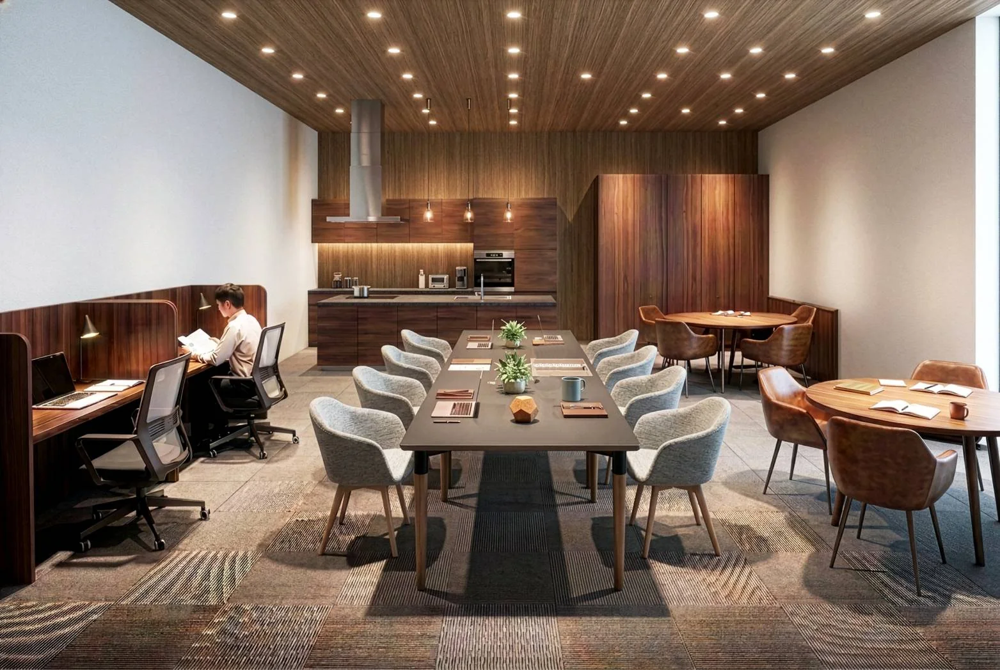
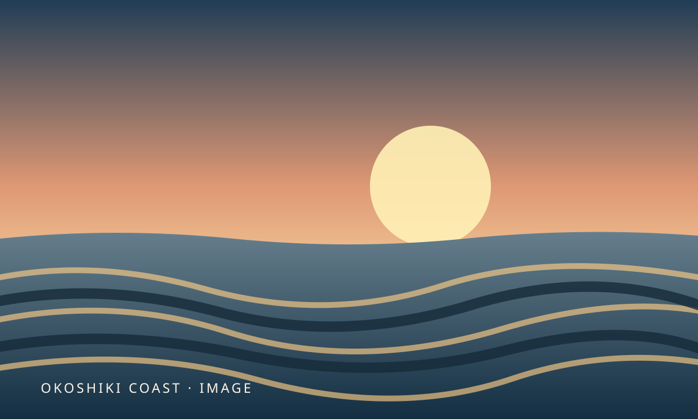
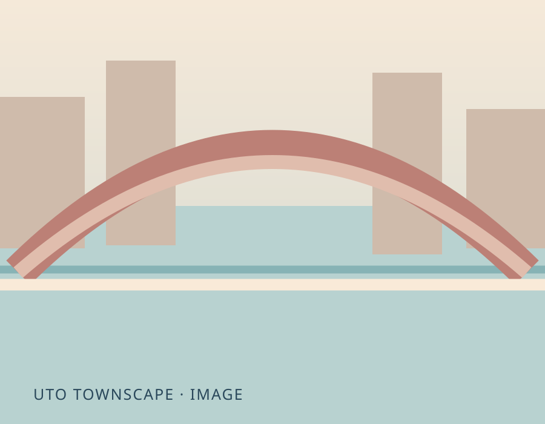
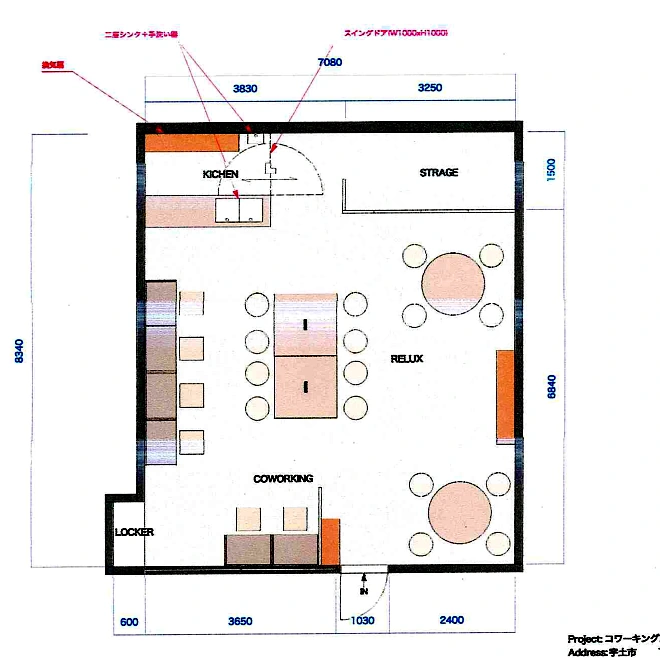

心地よく、働く。
個人作業やリモートワークに。Wi-Fiや電源を備え、日常の仕事に集中できる環境を目指します。
一人で集中する日も、誰かと話したい日も。
仕事も、学びも、新しい挑戦も。
宇土のまんなかに、もうひとつの居場所を。

御輿来海岸のゆるやかな砂紋。歴史を感じる宇土のまちなみ。
洗練された仕事場でありながら、気負わず集える地元の居場所に。

01 / SEA
02 / TOWN御輿来TERRACEが目指すのは、席を借りるだけで終わらない場所。
いつもの仕事に集中しながら、誰かとの出会いが次の仕事や挑戦につながる。そんな小さなきっかけを、この街に増やしていきます。
個人作業やリモートワークに。Wi-Fiや電源を備え、日常の仕事に集中できる環境を目指します。
地域の人や事業者がゆるやかに出会う。交流会やワークショップを通じて、新しい関係が生まれる場所に。
創業・起業・スタートアップ支援や広報、デザイン、AI活用などの相談機会を用意。やってみたい気持ちを、具体的な行動につなげます。
最新のお知らせ、施設利用希望、専門家相談、地域マッチングをまとめたデモアプリです。
※現在はデモです。登録内容は各端末内のみ保存され、正式な予約受付ではありません。
開業に関するご案内、相談会、イベントの情報をお届けします。
2026年12月中のプレオープン、2027年1月の本オープンに向けて準備しています。
※デモ投稿は同じブラウザ内でのみ反映されます。正式な全利用者向けの配信機能ではありません。
仕事も会話も、ちょうどいい距離感で。
図面の番号を押すとエリアの説明が切り替わります。

個別のワーク席と、打ち合わせにも使える共用テーブル。リモートワーク、資料作成、学習やアイデアの整理など、日常の働く時間に。
4人掛けテーブル2卓を想定。気分転換やちょっとした相談、地域の人との出会いなど、自然と会話が生まれる場に。
作業の合間の休憩や会話のきっかけに。コーヒーなどの飲料提供は検討中で、メニューや提供方法は準備ができ次第お知らせします。
手荷物や仕事道具を管理できるロッカーを計画。利用可能人数、費用、貸出条件については今後ご案内します。
備品やイベント用品などを整理する運営用収納。室内の雰囲気を保ち、用途に合わせた柔軟な利用を支えます。
木の温もりと、集中しやすい空気感。
落ち着きと親しみやすさを両立した空間を目指します。
商談やオンライン会議、少人数の打ち合わせに。コワーキングエリアとは別に、クローズドなミーティングルームの確保を進めています。
※別室は今回の平面図には含まれていません。部屋の仕様・所在地・席数・料金・予約方法は未確定です。
料金案を確認する →仕事に必要な機能をスマートに。
設備は開業に向けて順次整備します。
仕事や調べものに使える通信環境を整備予定。
整備予定PC作業に使いやすい電源設備を計画。
整備予定基本は無人運営。予約・入退室をスマートに。
導入予定仕事道具や荷物を預けられる仕組みを検討。
利用条件調整中コーヒーなどの軽飲料提供を検討しています。
提供方法調整中起業や集客、AI活用などを隔週で相談。
開催計画中ちょっとした作業から、日々の仕事の拠点まで。
使い方に合わせた料金プランをご用意する予定です。
必要な時間だけ、気軽に利用
席を固定せず利用するプラン
専用席を持つワーク拠点
席番号を割り当てる専用席。利用時間は営業時間内。契約・私物保管ルールは調整中。
ワークショップや交流会などに
イベント利用は事前の申請・調整制を予定しています。
隔週を目安に、起業、広告・広報、デザイン、資金調達、AI・DXなどの相談機会をつくります。働く場所と、挑戦する人を支える人材がつながる拠点を目指します。
アイデア整理、事業計画、初めの一歩
SNS活用、集客、マーケティング
伝え方、見せ方、デザイン相談
資金計画、制度の整理、相談先案内
業務改善、導入検討、ツール選び
※相談会は企画段階です。実施日時、担当専門家、料金、対象者、個別予約の受付方法は未確定です。
無人受付・電子ロックを基本に、予約から入退室までスムーズに使える仕組みを準備しています。
使いたい日時と利用プランを選択。
オンラインで事前予約・決済する方式を検討中。
電子ロックを使って入室し、スペースを利用。
忘れ物や片付けを確認して退室。
予約・決済・電子ロックの仕組みは現在準備中です。サイト上からの予約受付はまだ開始していません。
設備や運営内容は現在調整中です。確定次第、順次お知らせします。
2026年12月のプレオープン、2027年1月のグランドオープンを予定しています。実際の利用開始日と予約受付開始日は改めてお知らせします。
予約・決済・電子ロックを使った無人受付を基本として準備中です。正式な利用方法は開業前に公開します。
通話可能なエリアと時間帯のルールを検討しています。別室ミーティングルームも確保を進めていますが、利用開始時期や予約・料金は未確定です。
コーヒーなどの飲料提供を検討中です。提供方法やメニューは、必要な確認・準備を経て決定します。
地域の事業者や起業を考える方などを対象に、隔週の予約制相談会を予定しています。参加条件・料金・予約方法は決定次第ご案内します。
2026年12月プレオープン予定。
詳しいサービス内容や利用開始日は、決まり次第お知らせします。